11 面部中三分之一：颊韧带提升
面部中三分之一颊韧带提升术
POLINA HOLOVINA, AINA CERVERA-BAREA, AND JANI VAN LOGHEM
11.1 引言
韧带附着点已被整形外科医生和美容医师认为是重要的面部结构。其重要性在于它们在个体间具有一致的定位，以及由于其维持和稳定功能，参与了面部衰老和再生的过程 [1]。面部的保留韧带起源于骨膜或深层面部筋膜上相对较厚的结缔组织结构，随着其向表面的推进，它们会萌发出穿透SMAS的更薄的结构，这些结构作为支撑皮肤和皮下组织的点 [2]。
这些韧带将面部活动区与咀嚼肌结构分隔开。从上到下，保留韧带包括颞韧带（粘连和隔膜）、外侧眶周增厚、颧韧带、咬肌韧带和颏韧带 [3]，但本章仅讨论颧韧带（图11.1）。
对于颊部提升术，需要考虑两个相关的韧带结构——颧保留韧带和颧皮肤韧带（分别用ZRL和ZCL表示）。ZRL/ZCL韧带被认为是真正的韧带（起源于骨膜并附着于皮肤），呈圆柱状排列，起源于颧弓的下缘并附着于皮肤 [4,5]。
如今，人们更倾向于选择创伤期短、恢复快的美容程序而非手术面部提升术。Cong等人建议根据受试者的需求，沿着ZA注射ZRL，出于安全考虑，最好在后方区域进行 [6]。ZCL用于提升面部中下三分之一，因此建议在中颊沟与穿过外眦的垂直线的交汇处注射 [6]。
11.2 解剖学危险区域
颊部是一个高度神经支配和血管化的区域。为了处理该区域的韧带提升术，必须特别注意经面动脉、眶下动脉、颧面动脉、颧大肌的起源以及腮腺（图11.2）[3,6]。
11.3 颧保留韧带提升术
注射点位参考图11.3。
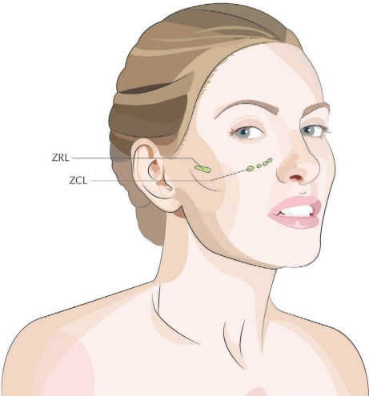
11.3.1 分步技术
-
在ZA的上缘和下缘做标记（图11.4）。
-
从ZA的上缘选择进入点。
-
用肾上腺素化利多卡因2%消毒并麻醉该区域（图11.5）。
注意：考虑进行颧面神经阻滞（参考第三章）。
-
使用23G锐针，在皮肤上建立进入点（图11.6）。
-
用25G、38 mm钝性套管针，在用非优势手支撑颊部的情况下，穿过皮肤向颧弓下缘推进。
-
穿透第一个阻力（SMAS）和第二个阻力（ZRL）。
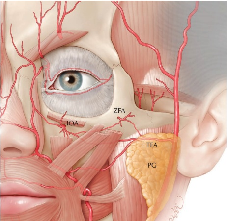
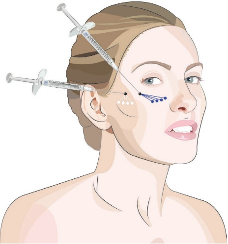
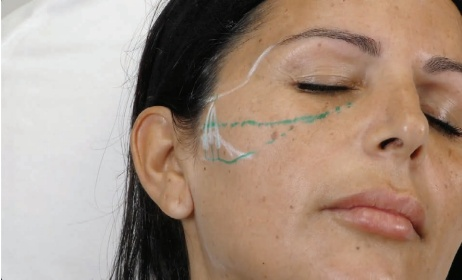
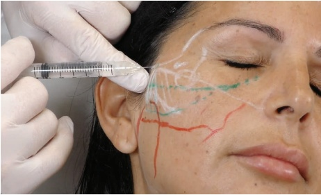
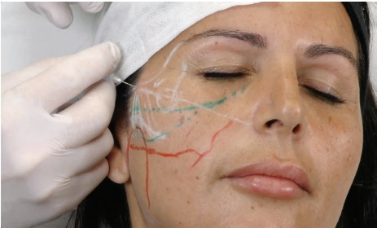
-
用非惯用手指按压ZFA的下缘，防止套管针移得过低并注射到危险区（图 11.7）。
-
注射一个 0.05 mL 的团注，然后再以更远端的方式注射 0.05 mL。
-
牵拉并重新定向套管针向内侧方向。再次穿过ZRL并
沉积羟基磷灰石钙（CaHA）的方式与前述步骤相同。
-
以团注和逆行方式共注射 0.3 mL。
-
通过向上按压和滚动来塑形团注，以重新定位颧皮韧带（图 11.8）。
11.4 颧肌-皮肤韧带提升术（ZYGOMATIC-CUTANEOUS LIGAMENT LIFT）注射用量放置，参见图 11.3
11.4.1 分步技术
-
描记标记以确定入路点。从发际线开始延伸一条与颧弓上缘平行的直线至鼻部，然后从眶缘外侧画一条垂直线，使其与前述标记相交。入路点应大致位于面颊顶点处（图 11.9）。
-
用肾上腺素化利多卡因 2% 清洁并麻醉该区域。
-
将一根 25G、38 mm 的钝性套管针穿过皮肤，朝向颧骨和颧皮韧带（ZCL）的附着点推进（图 11.10）。
-
在眶下孔外侧，注射 0.05 mL 的团注，然后以逆行方式再注射 0.05 mL（图 11.11）。
-
向外侧牵拉并重新定向钝性套管针。再次穿过颧皮韧带，并以与前述步骤相同的方式注射产品。
-
向外侧移动并重复上述步骤。
-
通过向上按压和滚动来塑形产品，以重新定位颧皮韧带（图 11.12）。
有关术前和术后效果以及应用技术，请参见图 11.3。
11.5 术后护理
可手动按摩该区域以使产品均匀分布。为改善填充剂材料的放置，期望能更水平地支撑保留韧带，建议采用有目的的塑形技术，通常称为“摇摆式技术”（rock 'n' roll technique）。进行此操作时，应使用向上塑形技术将产品按压到骨膜上至保留韧带的原发点，然后滚动
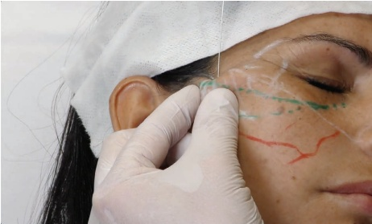
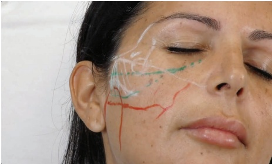
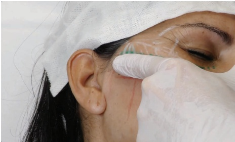
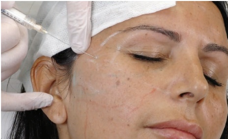
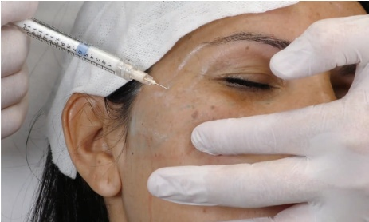
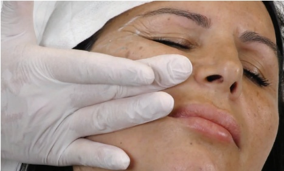
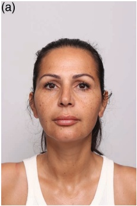
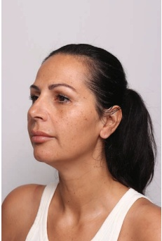
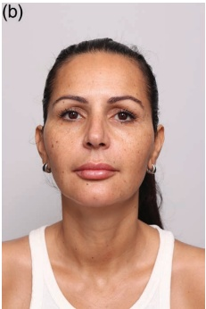
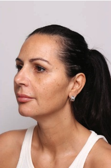
指向上方，以加固置入物与韧带原点的贴合。肿胀可能不均匀，应在一两天内消退。
11.6 实现最佳效果的附加治疗
为进一步改善面颊美观度，根据患者的具体情况和需求，可考虑使用局部乳霜、去角质或激光进行皮肤质量改善。与下颌缘重塑结合也可改善临床性松弛的下垂。
参考文献
[1] M. Alghoul, M. A. Codner, “Retaining ligaments of the face: Review of anatomy and clinical applications,” Aesthet Surg J, vol. 33, no. 6, pp. 769–782, 2013.
[2] A. Braz et al., “Revisiting the ligament line of the face: A new understanding for filling the fixed and mobile face,” Dermatol Clin, vol. 42, no. 1, pp. 97–102, 2024.
[3] B. Mendelson, “Facelift anatomy, SMAS, retaining ligaments and facial spaces,” in: Aston, J. et al., eds., Aesthetic Plastic Surgery. London: Saunders Elsevier, 2009, ch. 6, pp. 53–72.
[4] D. W. Furnas, “The retaining ligaments of the cheek,” Plast Reconstr Surg, vol. 83, no. 1, pp. 11–16, 1989.
[5] C. J. Moss et al., “Surgical anatomy of the ligamentous attachments in the temple and periorbital regions,” Plast Reconstr Surg, vol. 105, no. 4, pp. 1491–1498, 2000.
[6] L. Y. Cong et al., “Injectable filler technique for face lifting based on dissection of true facial ligaments,” Aesthet Surg J, vol. 41, no. 11, pp. NP1571–NP1583, 2021.